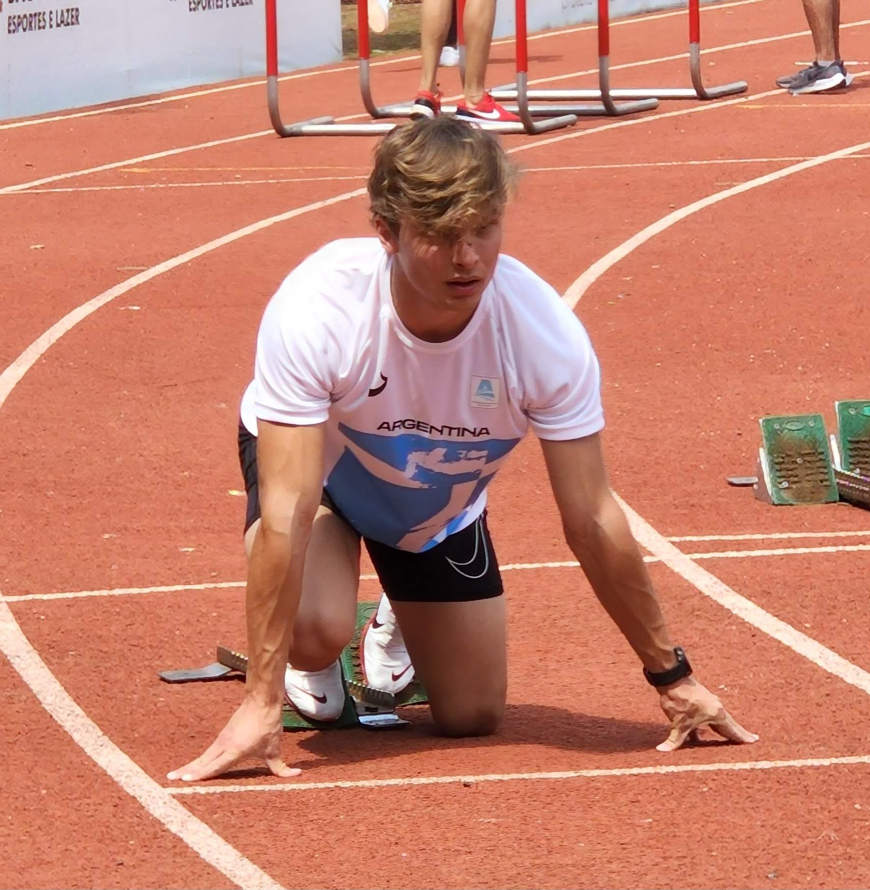

Mi nombre es Nico
Y esta es mi presentación

"Soy... veloz FIAUUUM"
Mi presentación
Yo soy de San Juan, vine a vivir a Buenos Aires hace aproximadamente un año. Lo que me impulso para venir a vivir a esta ciudad fue principalmente el estudio y el deporte, hace 2 años me cambié de entrenador pero no pude venir a vivir en el momento por el colegio secundario, a si que apenas lo termine vine a vivir para entrenar con el. Formo parte de un club que se llama Sociedad Alemana de Gimnasia de Villa Ballester, y casi todos los entrenamientos son ahí o en el Centro Nacional de alto rendimiento. Y lo otro que me impulso fue la universidad, las oportunidades de educativas de San Juan no me llamaban mucho la atención a si que decidí estudiar acá lo que realmente me gusta.
Haz click aquí para saber mas sobre mi
Mis paginas favoritas: